object-position — 85.71% all categories ↑
FAIL 48.10% img-object-position-far-edge-length · far-edge-length-cover · REALColorValueΔE 37.9
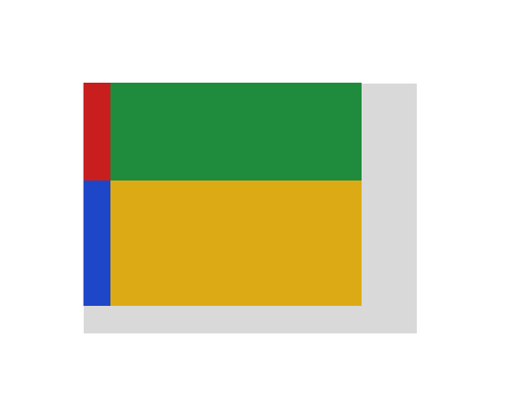
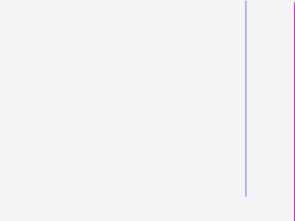
diff colours:MissingExtraColorErrGeomShiftAA edgeMatchAA / edge-jitter = cross-rasterizer measurement ceiling, not a bug.
why: fill recolour ΔRGB(-20,-77,-30) (ΔE 37.9)
object-position:right 20px bottom 10px offsets a cover-fitted image from far edges; catches parsing right 20px as plain right alignment.
regions (1)
| class | bbox (CSS px) | area% | magnitude | reason |
|---|---|---|---|---|
| ColorValue | 0,0 → 120,90 | 48.10 | ΔE 37.9 ΔRGB(-20,-77,-30) | fill recolour ΔRGB(-20,-77,-30) (ΔE 37.9) |
source · cases/images-replaced/img-object-position-far-edge-length.html
1<!DOCTYPE html>
2<html lang="en">
3<head>
4<meta charset="utf-8">
5<style>
6 @page { size: 190px 150px; margin: 0; }
7 html { font-family: ParitySans; line-height: 1.5; }
8 * { margin: 0; box-sizing: border-box; }
9 html, body { background: #ffffff; }
10 body { padding: 30px; }
11 .photo {
12 display: block;
13 width: 120px;
14 height: 90px;
15 background: #d9d9d9;
16 object-fit: cover;
17 object-position: right 20px bottom 10px;
18 image-rendering: pixelated;
19 }
20</style>
21</head>
22<body>
23 <img class="photo" alt="" src="data:image/png;base64,iVBORw0KGgoAAAANSUhEUgAAAAgAAAAECAIAAAA8r+mnAAAAIElEQVR42mM4IScHR3I9NnDEgFNCzu0EHN1ZJQJHOCUAni4lgeO2HLIAAAAASUVORK5CYII=">
24</body>
25</html>
PASS 0.35% img-object-position-far-edge-percent · far-edge-percent-coverGeometryShift
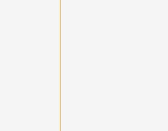
diff colours:MissingExtraColorErrGeomShiftAA edgeMatchAA / edge-jitter = cross-rasterizer measurement ceiling, not a bug.
why: content shifted ~0.0px beyond page-origin calibration
object-position:right 25% bottom 25% offsets a cover-fitted image from far edges; catches treating far-edge percentages as plain 25% 25% or default center.
regions (1)
| class | bbox (CSS px) | area% | magnitude | reason |
|---|---|---|---|---|
| GeometryShift | 32,0 → 32,70 | 0.35 | shift(-0.3,0.0) | content shifted (-0.3,0.0)px beyond page-origin calibration |
source · cases/images-replaced/img-object-position-far-edge-percent.html
1<!DOCTYPE html>
2<html lang="en">
3<head>
4<meta charset="utf-8">
5<style>
6 @page { size: 140px 110px; margin: 0; }
7 html { font-family: ParitySans; line-height: 1.5; }
8 * { margin: 0; box-sizing: border-box; }
9 html, body { background: #ffffff; }
10 .slot {
11 width: 90px;
12 height: 70px;
13 overflow: hidden;
14 background: #c62828;
15 }
16 .slot img {
17 display: block;
18 width: 90px;
19 height: 70px;
20 object-fit: cover;
21 object-position: right 25% bottom 25%;
22 image-rendering: pixelated;
23 }
24</style>
25</head>
26<body>
27 <div class="slot">
28 <img alt="" src="data:image/png;base64,iVBORw0KGgoAAAANSUhEUgAAAAgAAAAECAIAAAA8r+mnAAAAFUlEQVR42mM4pqEBR1z1enDEQD0JAMyPHNFwKtUxAAAAAElFTkSuQmCC">
29 </div>
30</body>
31</html>
PASS 0.27% img-object-fit-cover-position · cover-left-top-cropColorSpaceΔE 52.3
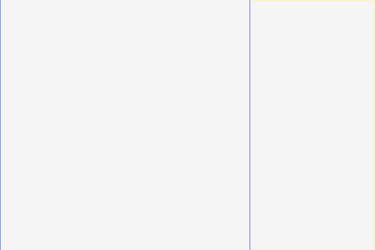
diff colours:MissingExtraColorErrGeomShiftAA edgeMatchAA / edge-jitter = cross-rasterizer measurement ceiling, not a bug.
why: color-space mismatch (sRGB vs linear) — gradient/blend drift
object-fit:cover with object-position:left top anchors the left edge of an overflowing 2:1 image, cropping its right half.
regions (2)
| class | bbox (CSS px) | area% | magnitude | reason |
|---|---|---|---|---|
| ColorSpace | 0,0 → 0,160 | 0.13 | ΔRGB(145,119,35) | color-space mismatch (sRGB vs linear) — gradient/blend drift |
| ColorValue | 160,0 → 160,160 | 0.13 | ΔRGB(184,111,-116) | fill recolour ΔRGB(+184,+111,-116) (ΔE 0.0) |
source · cases/images-replaced/img-object-fit-cover-position.html
1<!DOCTYPE html>
2<html lang="en">
3<head>
4<meta charset="utf-8">
5<title>img object-fit cover with object-position</title>
6<style>
7 @page { size: 377px 220px; margin: 0; }
8 html { font-family: ParitySans; line-height: 1.5; }
9 * { margin: 0; box-sizing: border-box; }
10 html, body { background: #ffffff; }
11 .stage { width: 240px; margin: 30px; background: #eeeeee; }
12 /* cover scales the 2:1 image to fill the 160x160 box (320x160), overflowing
13 horizontally; object-position left top anchors the left edge so the red/blue
14 left half is shown and the right (green/yellow) half is cropped. */
15 img {
16 display: block; width: 160px; height: 160px; background: #cccccc;
17 object-fit: cover; object-position: left top; image-rendering: pixelated;
18 }
19</style>
20</head>
21<body>
22 <div class="stage">
23 <img alt="" width="160" height="160" src="data:image/png;base64,iVBORw0KGgoAAAANSUhEUgAAAAgAAAAECAIAAAA8r+mnAAAAIElEQVR42mM4IScHR3I9NnDEgFNCzu0EHN1ZJQJHOCUAni4lgeO2HLIAAAAASUVORK5CYII=">
24 </div>
25</body>
26</html>
PASS 0.20% img-object-fit-cover-default-center · cover-default-50-50ColorSpaceΔE 27.0


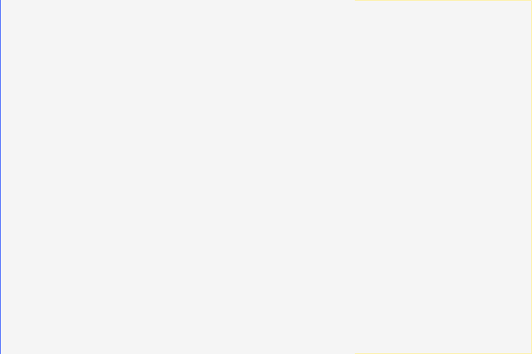
diff colours:MissingExtraColorErrGeomShiftAA edgeMatchAA / edge-jitter = cross-rasterizer measurement ceiling, not a bug.
why: color-space mismatch (sRGB vs linear) — gradient/blend drift
object-fit:cover with the default object-position 50% 50% splits the overflow evenly, showing the central strip of the image.
regions (2)
| class | bbox (CSS px) | area% | magnitude | reason |
|---|---|---|---|---|
| ColorSpace | 0,0 → 0,160 | 0.13 | ΔRGB(145,119,35) | color-space mismatch (sRGB vs linear) — gradient/blend drift |
| ColorValue | 160,80 → 160,160 | 0.07 | ΔRGB(-6,11,64) | fill recolour ΔRGB(-6,+11,+64) (ΔE 0.0) |
source · cases/images-replaced/img-object-fit-cover-default-center.html
1<!DOCTYPE html>
2<html lang="en">
3<head>
4<meta charset="utf-8">
5<title>img object-fit cover default centering</title>
6<style>
7 @page { size: 377px 220px; margin: 0; }
8 html { font-family: ParitySans; line-height: 1.5; }
9 * { margin: 0; box-sizing: border-box; }
10 html, body { background: #ffffff; }
11 .stage { width: 240px; margin: 30px; background: #eeeeee; }
12 /* cover scales the 2:1 image to 320x160 to fill the 160x160 box; with the
13 default object-position 50% 50% the overflow is split evenly left/right so
14 the central vertical strip (straddling the red|green and blue|yellow seam)
15 is shown. */
16 img {
17 display: block; width: 160px; height: 160px; background: #cccccc;
18 object-fit: cover; image-rendering: pixelated;
19 }
20</style>
21</head>
22<body>
23 <div class="stage">
24 <img alt="" width="160" height="160" src="data:image/png;base64,iVBORw0KGgoAAAANSUhEUgAAAAgAAAAECAIAAAA8r+mnAAAAIElEQVR42mM4IScHR3I9NnDEgFNCzu0EHN1ZJQJHOCUAni4lgeO2HLIAAAAASUVORK5CYII=">
25 </div>
26</body>
27</html>
PASS 0.13% img-object-position-length · length-valuesGeometryShiftΔE 2.6
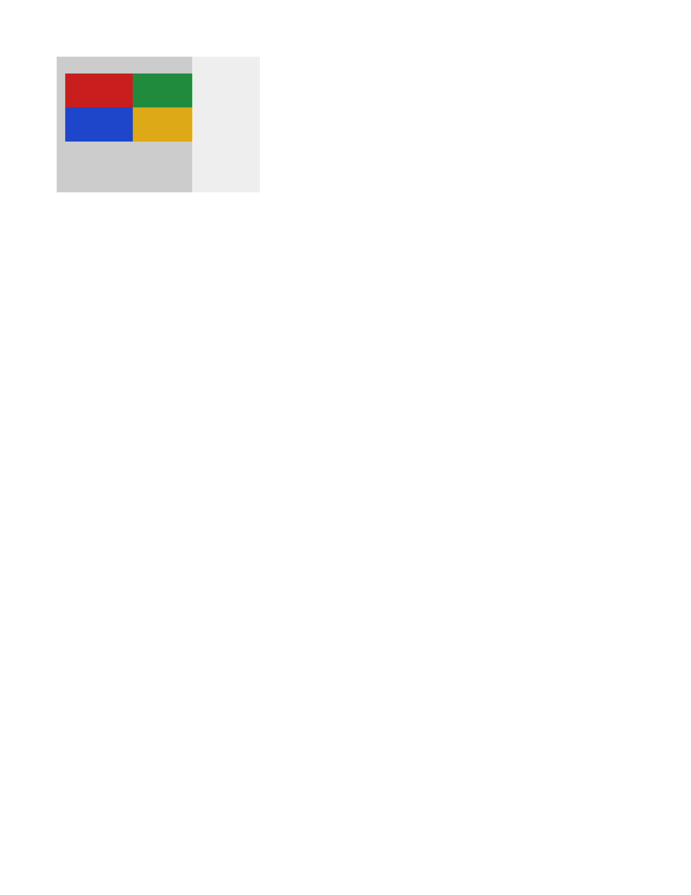
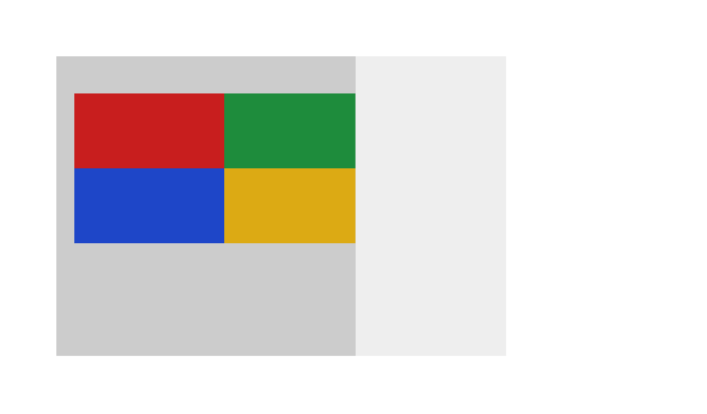
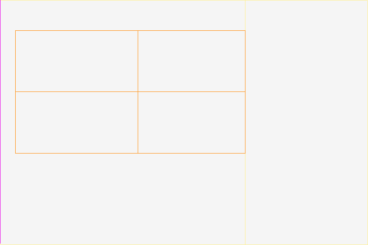
diff colours:MissingExtraColorErrGeomShiftAA edgeMatchAA / edge-jitter = cross-rasterizer measurement ceiling, not a bug.
why: content shifted ~0.0px beyond page-origin calibration
object-position:10px 20px offsets a contained 2:1 image by absolute lengths from the box top-left.
regions (3)
| class | bbox (CSS px) | area% | magnitude | reason |
|---|---|---|---|---|
| GeometryShift | 10,20 → 10,100 | 0.07 | shift(-0.3,-0.0) | content shifted (-0.3,-0.0)px beyond page-origin calibration |
| ColorValue | 160,100 → 160,160 | 0.05 | ΔRGB(-11,-11,-11) α0.84 | fill recolour ΔRGB(-11,-11,-11) (ΔE 0.0) |
| ColorValue | 160,0 → 160,20 | 0.02 | ΔRGB(-11,-11,-11) α0.84 | fill recolour ΔRGB(-11,-11,-11) (ΔE 0.0) |
source · cases/images-replaced/img-object-position-length.html
1<!DOCTYPE html>
2<html lang="en">
3<head>
4<meta charset="utf-8">
5<title>img object-position length</title>
6<style>
7 @page { size: 377px 221px; margin: 0; }
8 html { font-family: ParitySans; line-height: 1.5; }
9 * { margin: 0; box-sizing: border-box; }
10 html, body { background: #ffffff; }
11 .stage { width: 240px; margin: 30px; background: #eeeeee; }
12 /* contain letterboxes the 2:1 image to 160x80; object-position 10px 20px
13 offsets it 10px from the left edge and 20px from the top of the box. */
14 img {
15 display: block; width: 160px; height: 160px; background: #cccccc;
16 object-fit: contain; object-position: 10px 20px; image-rendering: pixelated;
17 }
18</style>
19</head>
20<body>
21 <div class="stage">
22 <img alt="" width="160" height="160" src="data:image/png;base64,iVBORw0KGgoAAAANSUhEUgAAAAgAAAAECAIAAAA8r+mnAAAAIElEQVR42mM4IScHR3I9NnDEgFNCzu0EHN1ZJQJHOCUAni4lgeO2HLIAAAAASUVORK5CYII=">
23 </div>
24</body>
25</html>
PASS 0.07% img-object-position · bottom-with-containColorValueΔE 2.6α 0.84↛
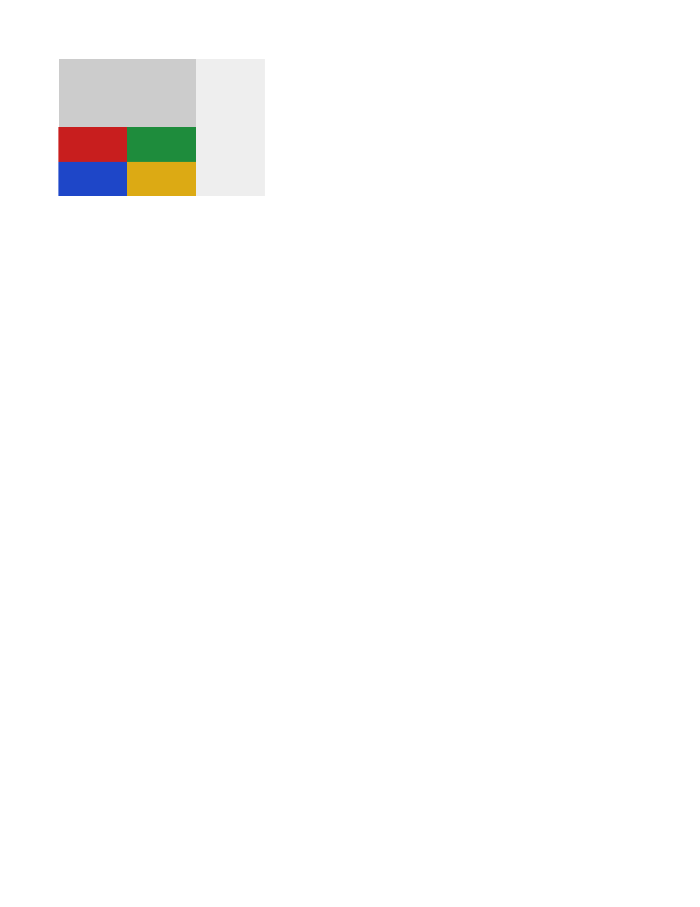
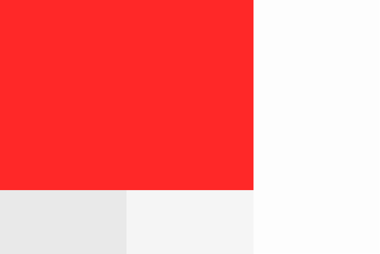
diff colours:MissingExtraColorErrGeomShiftAA edgeMatchAA / edge-jitter = cross-rasterizer measurement ceiling, not a bug.
why: fill recolour ΔRGB(-11,-11,-11) (ΔE 2.6)
object-position:bottom anchors a contained 2:1 image to the bottom edge of a 160x160 box.
regions (1)
| class | bbox (CSS px) | area% | magnitude | reason |
|---|---|---|---|---|
| ColorValue | 160,0 → 160,79 | 0.07 | ΔRGB(-11,-11,-11) α0.84 | fill recolour ΔRGB(-11,-11,-11) (ΔE 0.0) |
source · cases/images-replaced/img-object-position.html
1<!DOCTYPE html>
2<html lang="en">
3<head>
4<meta charset="utf-8">
5<title>img object-position with contain</title>
6<style>
7 @page { size: 377px 221px; margin: 0; }
8 html { font-family: ParitySans; line-height: 1.5; }
9 * { margin: 0; box-sizing: border-box; }
10 html, body { background: #ffffff; }
11 .stage {
12 width: 240px;
13 margin: 30px;
14 background: #eeeeee;
15 }
16 /* contain letterboxes the 2:1 image to 160x80; object-position bottom anchors it to the box bottom. */
17 img {
18 display: block;
19 width: 160px;
20 height: 160px;
21 background: #cccccc;
22 object-fit: contain;
23 object-position: bottom;
24 image-rendering: pixelated;
25 }
26</style>
27</head>
28<body>
29 <div class="stage">
30 <img alt="" width="160" height="160" src="data:image/png;base64,iVBORw0KGgoAAAANSUhEUgAAAAgAAAAECAIAAAA8r+mnAAAAIElEQVR42mM4IScHR3I9NnDEgFNCzu0EHN1ZJQJHOCUAni4lgeO2HLIAAAAASUVORK5CYII=">
31 </div>
32</body>
33</html>
PASS 0.07% img-object-position-percent · percentage-valuesColorValueΔE 2.6α 0.84↛
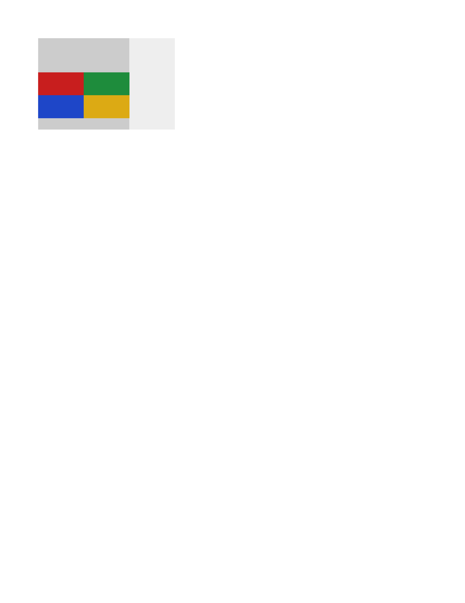
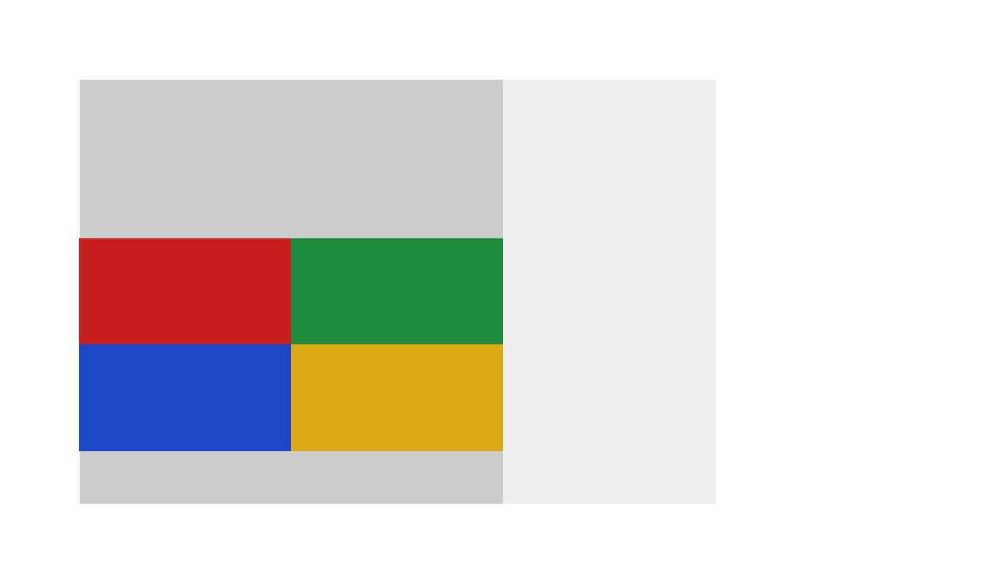
diff colours:MissingExtraColorErrGeomShiftAA edgeMatchAA / edge-jitter = cross-rasterizer measurement ceiling, not a bug.
why: fill recolour ΔRGB(-11,-11,-11) (ΔE 2.6)
object-position:25% 75% positions a contained 2:1 image within the free space of a 160x160 box.
regions (2)
| class | bbox (CSS px) | area% | magnitude | reason |
|---|---|---|---|---|
| ColorValue | 160,0 → 160,60 | 0.05 | ΔRGB(-11,-11,-11) α0.84 | fill recolour ΔRGB(-11,-11,-11) (ΔE 0.0) |
| ColorValue | 160,140 → 160,160 | 0.02 | ΔRGB(-11,-11,-11) α0.84 | fill recolour ΔRGB(-11,-11,-11) (ΔE 0.0) |
source · cases/images-replaced/img-object-position-percent.html
1<!DOCTYPE html>
2<html lang="en">
3<head>
4<meta charset="utf-8">
5<title>img object-position percentage</title>
6<style>
7 @page { size: 377px 221px; margin: 0; }
8 html { font-family: ParitySans; line-height: 1.5; }
9 * { margin: 0; box-sizing: border-box; }
10 html, body { background: #ffffff; }
11 .stage { width: 240px; margin: 30px; background: #eeeeee; }
12 /* contain letterboxes the 2:1 image to 160x80; object-position 25% 75%
13 anchors it 25% from the left and 75% from the top of the free space. */
14 img {
15 display: block; width: 160px; height: 160px; background: #cccccc;
16 object-fit: contain; object-position: 25% 75%; image-rendering: pixelated;
17 }
18</style>
19</head>
20<body>
21 <div class="stage">
22 <img alt="" width="160" height="160" src="data:image/png;base64,iVBORw0KGgoAAAANSUhEUgAAAAgAAAAECAIAAAA8r+mnAAAAIElEQVR42mM4IScHR3I9NnDEgFNCzu0EHN1ZJQJHOCUAni4lgeO2HLIAAAAASUVORK5CYII=">
23 </div>
24</body>
25</html>